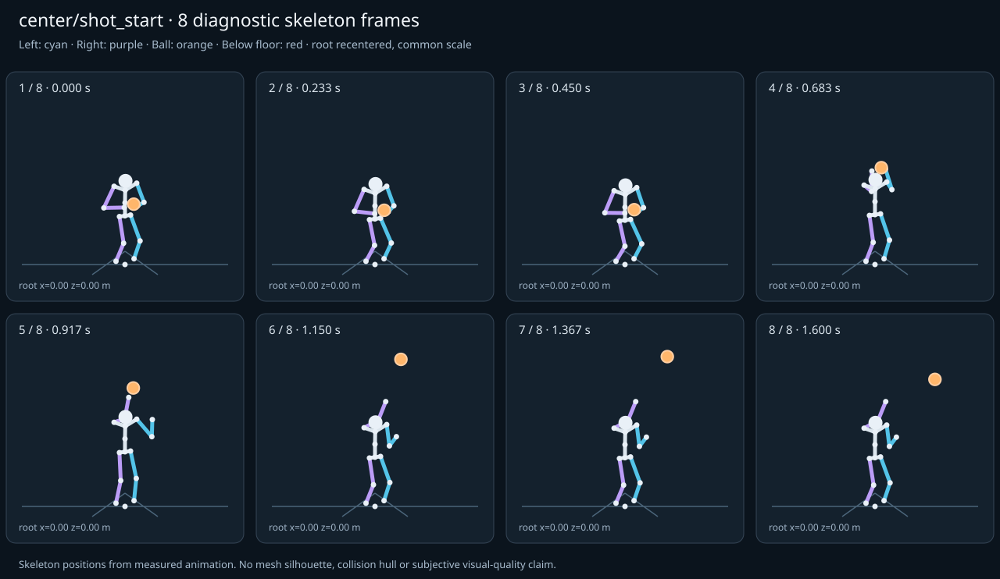

מה הוריד את הציון
- קפיצות פוזה: LeftHand בזמן 0.9167 ש׳; קפיצת סיבוב שקולה 68.6756 מעלות ב־60Hz (אדום)
- כניסה ויציאה מול המתנה: פער ב־יציאה מול המתנה; יחס חריגה 4.2323 (אדום)
כיסוי: 100%. לא כל מדד חל על כל קליפ; הסטטוס והראיות מפורטים למטה.
שמונה פריימים
תצוגת שלד אבחונית שנבנתה מהפריימים הנמדדים. צד שמאל בכחול, ימין בסגול, כדור בכתום. מיקום השורש ממורכז לצפייה; מיקומו בעולם כתוב בכל פריים.

המדדים והראיות
| מדד | מצב | ערך | ציון | סף ופרטי מדידה |
|---|---|---|---|---|
| החלקת רגליים | ירוק | 0 height ratio | 100 | {
"definition": {
"label": "החלקת רגליים",
"unit": "height ratio",
"green": 0.01,
"yellow": 0.035,
"weight": 18,
"description": "Maximum horizontal sole displacement from the first sample of each declared support window, divided by character height. Inferred support is used only when no windows were supplied."
},
"value": 0.000015,
"status": "green",
"score": 99.97,
"evidence": {
"coordinateSpace": "native GLB external Motion node (applied once)",
"supportSource": "declared",
"windows": 2,
"samples": 194,
"maxDriftMeters": 0.000032,
"p95SpeedMetersPerSecond": 0.001866,
"worst": {
"bone": "LeftFoot",
"t": 1.016667,
"start": 0,
"end": 1.6,
"driftMeters": 0.000032
}
}
} |
| חדירה לרצפה | ירוק | 0 height ratio | 99 | {
"definition": {
"label": "חדירה לרצפה",
"unit": "height ratio",
"green": 0.005,
"yellow": 0.02,
"weight": 15,
"description": "Maximum depth of the supplied sole probe points and all skeletal joint centers below the declared floor plane, divided by height. Sole probes are not a mesh collision audit."
},
"value": 0.000133,
"status": "green",
"score": 99.47,
"evidence": {
"samples": 1940,
"floorY": 0,
"probeKind": "declared sole probes plus skeletal joint centers (no mesh surfaces)",
"maxDepthMeters": 0.000277,
"worst": {
"t": 0.783333,
"bone": "LeftFoot",
"depthMeters": 0.000277,
"y": -0.000277
}
}
} |
| קפיצות פוזה | אדום | 5.289 discontinuity ratio | 22 | {
"definition": {
"label": "קפיצות פוזה",
"unit": "discontinuity ratio",
"green": 1,
"yellow": 2.5,
"weight": 18,
"description": "Maximum adjacent 60 Hz-equivalent step: root-relative marker displacement / 0.04 height, root-relative rotation / 15 degrees, or root translation / 0.08 height. A fast continuous action can also exceed this screening threshold."
},
"value": 5.288777,
"status": "red",
"score": 22.11,
"evidence": {
"adjacentPairs": 96,
"observations": 1632,
"maxDegrees60Hz": 68.675596,
"maxMarkerStepHeight60Hz": 0.211551,
"maxRootStepHeight60Hz": 0,
"worst": {
"ratio": 5.2887772607360155,
"t": 0.916667,
"previousTime": 0.9,
"bone": "LeftHand",
"markerStepHeight60Hz": 0.211551,
"degrees60Hz": 1.574461
}
}
} |
| חריגות אנטומיות | ירוק | 0 % affected frames | 100 | {
"definition": {
"label": "חריגות אנטומיות",
"unit": "% affected frames",
"green": 0.5,
"yellow": 3,
"weight": 14,
"description": "Percentage of frames with elbow or knee flexion above 165 degrees, neck bend above 80 degrees, or a segment length changing by more than 5%. Optional calibrated hinge checks detect reverse knee flexion above 8 degrees. Conservative marker limits do not diagnose axial joint twist."
},
"value": 0,
"status": "green",
"score": 100,
"evidence": {
"testedFrames": 97,
"affectedFrames": 0,
"checks": 1649,
"maxLimbFlexionDegrees": 145.315773,
"maxRelativeSegmentLengthChange": 0,
"hingeDirectionChecked": true,
"axialTwistChecked": false,
"violations": []
}
} |
| מגע בכדור | ירוק | 0.002 height ratio | 97 | {
"definition": {
"label": "מגע בכדור",
"unit": "height ratio",
"green": 0.015,
"yellow": 0.05,
"weight": 13,
"description": "Maximum absolute distance from the ball surface to the sampled, bone-transformed declared contact point, divided by height. Events are evaluated at their exact declared times by interpolation."
},
"value": 0.002107,
"status": "green",
"score": 97.19,
"evidence": {
"radiusMeters": 0.12,
"samples": 100,
"missed": [],
"contacts": [
{
"t": 0.516667,
"bone": "LeftHand",
"gapMeters": 0.004382,
"signedGapMeters": -0.004382,
"centerDistanceMeters": 0.115618,
"contactPoint": [
0.088361,
1.447244,
0.389907
],
"ballCenter": [
-0.027051,
1.444992,
0.383381
],
"declaredLocalPoint": true
},
{
"t": 0.55,
"bone": "LeftHand",
"gapMeters": 0.003771,
"signedGapMeters": -0.003771,
"centerDistanceMeters": 0.116229,
"contactPoint": [
0.076028,
1.601725,
0.391832
],
"ballCenter": [
-0.04,
1.601688,
0.385
],
"declaredLocalPoint": true
},
{
"t": 0.483333,
"bone": "LeftHand",
"gapMeters": 0.003301,
"signedGapMeters": -0.003301,
"centerDistanceMeters": 0.116699,
"contactPoint": [
0.101192,
1.299185,
0.386325
],
"ballCenter": [
-0.015418,
1.298027,
0.381927
],
"declaredLocalPoint": true
},
{
"t": 0.516667,
"bone": "RightHand",
"gapMeters": 0.002741,
"signedGapMeters": -0.002741,
"centerDistanceMeters": 0.117259,
"contactPoint": [
-0.143992,
1.448317,
0.391343
],
"ballCenter": [
-0.027051,
1.444992,
0.383381
],
"declaredLocalPoint": true
},
{
"t": 0.583333,
"bone": "LeftHand",
"gapMeters": 0.002721,
"signedGapMeters": -0.002721,
"centerDistanceMeters": 0.117279,
"contactPoint": [
0.064166,
1.749535,
0.392485
],
"ballCenter": [
-0.052949,
1.751562,
0.386619
],
"declaredLocalPoint": true
},
{
"t": 0.483333,
"bone": "RightHand",
"gapMeters": 0.002361,
"signedGapMeters": -0.002361,
"centerDistanceMeters": 0.117639,
"contactPoint": [
-0.132945,
1.299404,
0.386899
],
"ballCenter": [
-0.015418,
1.298027,
0.381927
],
"declaredLocalPoint": true
},
{
"t": 0.55,
"bone": "RightHand",
"gapMeters": 0.001961,
"signedGapMeters": -0.001961,
"centerDistanceMeters": 0.118039,
"contactPoint": [
-0.157725,
1.603085,
0.393491
],
"ballCenter": [
-0.04,
1.601688,
0.385
],
"declaredLocalPoint": true
},
{
"t": 0.616667,
"bone": "LeftHand",
"gapMeters": 0.001648,
"signedGapMeters": -0.001648,
"centerDistanceMeters": 0.118352,
"contactPoint": [
0.053716,
1.880064,
0.391493
],
"ballCenter": [
-0.064582,
1.881205,
0.388073
],
"declaredLocalPoint": true
},
{
"t": 0.45,
"bone": "LeftHand",
"gapMeters": 0.001516,
"signedGapMeters": -0.001516,
"centerDistanceMeters": 0.118484,
"contactPoint": [
0.11205,
1.180204,
0.382661
],
"ballCenter": [
-0.00642,
1.180119,
0.380802
],
"declaredLocalPoint": true
},
{
"t": 0.583333,
"bone": "RightHand",
"gapMeters": 0.001194,
"signedGapMeters": -0.001194,
"centerDistanceMeters": 0.118806,
"contactPoint": [
-0.171517,
1.74973,
0.393915
],
"ballCenter": [
-0.052949,
1.751562,
0.386619
],
"declaredLocalPoint": true
},
{
"t": 0.45,
"bone": "RightHand",
"gapMeters": 0.001184,
"signedGapMeters": -0.001184,
"centerDistanceMeters": 0.118816,
"contactPoint": [
-0.12522,
1.180198,
0.38278
],
"ballCenter": [
-0.00642,
1.180119,
0.380802
],
"declaredLocalPoint": true
},
{
"t": 0.616667,
"bone": "RightHand",
"gapMeters": 0.000775,
"signedGapMeters": -0.000775,
"centerDistanceMeters": 0.119225,
"contactPoint": [
-0.183726,
1.880016,
0.392302
],
"ballCenter": [
-0.064582,
1.881205,
0.388073
],
"declaredLocalPoint": true
},
{
"t": 0.65,
"bone": "LeftHand",
"gapMeters": 0.000632,
"signedGapMeters": -0.000632,
"centerDistanceMeters": 0.119368,
"contactPoint": [
0.045781,
1.978514,
0.390391
],
"ballCenter": [
-0.07358,
1.978782,
0.389198
],
"declaredLocalPoint": true
},
{
"t": 0.65,
"bone": "RightHand",
"gapMeters": 0.000352,
"signedGapMeters": -0.000352,
"centerDistanceMeters": 0.119648,
"contactPoint": [
-0.193219,
1.978478,
0.390667
],
"ballCenter": [
-0.07358,
1.978782,
0.389198
],
"declaredLocalPoint": true
},
{
"t": 0.816667,
"bone": "RightHand",
"gapMeters": 0.000301,
"signedGapMeters": -0.000301,
"centerDistanceMeters": 0.119699,
"contactPoint": [
-0.199694,
2.273634,
0.409676
],
"ballCenter": [
-0.08,
2.27331,
0.408611
],
"declaredLocalPoint": true
},
{
"t": 0.783333,
"bone": "RightHand",
"gapMeters": 0.000249,
"signedGapMeters": -0.000249,
"centerDistanceMeters": 0.119751,
"contactPoint": [
-0.199746,
2.185505,
0.402442
],
"ballCenter": [
-0.08,
2.185414,
0.401389
],
"declaredLocalPoint": true
},
{
"t": 0.85,
"bone": "RightHand",
"gapMeters": 0.000209,
"signedGapMeters": -0.000209,
"centerDistanceMeters": 0.119791,
"contactPoint": [
-0.199788,
2.351424,
0.415648
],
"ballCenter": [
-0.08,
2.351064,
0.415
],
"declaredLocalPoint": true
},
{
"t": 0.416667,
"bone": "LeftHand",
"gapMeters": 0.000205,
"signedGapMeters": -0.000205,
"centerDistanceMeters": 0.119795,
"contactPoint": [
0.118423,
1.112277,
0.380411
],
"ballCenter": [
-0.001372,
1.112309,
0.380171
],
"declaredLocalPoint": true
},
{
"t": 0.416667,
"bone": "RightHand",
"gapMeters": 0.000168,
"signedGapMeters": -0.000168,
"centerDistanceMeters": 0.119832,
"contactPoint": [
-0.121204,
1.112271,
0.380418
],
"ballCenter": [
-0.001372,
1.112309,
0.380171
],
"declaredLocalPoint": true
},
{
"t": 0.75,
"bone": "RightHand",
"gapMeters": 0.000113,
"signedGapMeters": -0.000113,
"centerDistanceMeters": 0.119887,
"contactPoint": [
-0.199885,
2.107629,
0.39555
],
"ballCenter": [
-0.08,
2.10766,
0.395
],
"declaredLocalPoint": true
}
],
"contactDetailsTruncated": true,
"coordinateSpace": "native GLB external Motion node (applied once)"
}
} |
| כניסה ויציאה מול המתנה | אדום | 4.232 continuity ratio | 40 | {
"definition": {
"label": "כניסה ויציאה מול המתנה",
"unit": "continuity ratio",
"green": 1,
"yellow": 3,
"weight": 10,
"description": "Worst entry/exit mismatch to the best matching idle phase: RMS marker error / 0.04 height, RMS bone rotation / 25 degrees, or RMS endpoint velocity error / 0.75 height per second. Horizontal root translation is aligned; root height and body pose remain measurable."
},
"value": 4.232311,
"status": "red",
"score": 39.73,
"evidence": {
"entry": {
"ratio": 3.719468071900087,
"t": 0,
"idleTime": 0,
"markers": 17,
"rmsPositionHeight": 0.148779,
"rmsRotationDegrees": 74.630216,
"rmsVelocityHeightPerSecond": 0.031186,
"velocityEvaluated": true
},
"exit": {
"ratio": 4.232310706135382,
"t": 1.6,
"idleTime": 0.05,
"markers": 17,
"rmsPositionHeight": 0.169292,
"rmsRotationDegrees": 59.148712,
"rmsVelocityHeightPerSecond": 0,
"velocityEvaluated": true
},
"worstEndpoint": "exit",
"alignment": "horizontal root translation; raw asset poses used when provided"
}
} |
| מהירות גוף מול צעדים | לא חל | — relative speed error | — | {
"definition": {
"label": "מהירות גוף מול צעדים",
"unit": "relative speed error",
"green": 0.2,
"yellow": 0.5,
"weight": 8,
"description": "Relative difference between average root travel speed and the median backward support-foot sweep speed relative to the root. Cadence and implied stride lengths are also reported. In-place clips need an explicit reference travel scenario; stationary actions are not scored as locomotion."
},
"value": null,
"status": "not-applicable",
"score": null,
"reason": "This action is not declared locomotion.",
"evidence": {}
} |
| סימטריה | ירוק | 0 relative mismatch | 100 | {
"definition": {
"label": "סימטריה",
"unit": "relative mismatch",
"green": 0.03,
"yellow": 0.1,
"weight": 4,
"description": "Maximum bilateral segment-length mismatch. Looping locomotion additionally compares reflected half-cycle leg markers; explicit pose symmetry compares simultaneous bilateral markers. One-sided actions retain unscored motion diagnostics, so a valid kick or dribble arm is not penalized for intentional asymmetry."
},
"value": 0,
"status": "green",
"score": 100,
"evidence": {
"mode": "structural",
"modeSource": "structural default for intentional asymmetry",
"structuralMismatch": 0,
"segments": [
{
"segment": "Arm-ForeArm",
"mismatch": 0
},
{
"segment": "ForeArm-Hand",
"mismatch": 0
},
{
"segment": "UpLeg-Leg",
"mismatch": 0
},
{
"segment": "Leg-Foot",
"mismatch": 0
}
],
"motionRmsHeight": null,
"worstMotion": null,
"bilateralPoseRmsHeightUnscored": 0.15725,
"note": "One-sided authored actions are checked for structural symmetry only."
}
} |